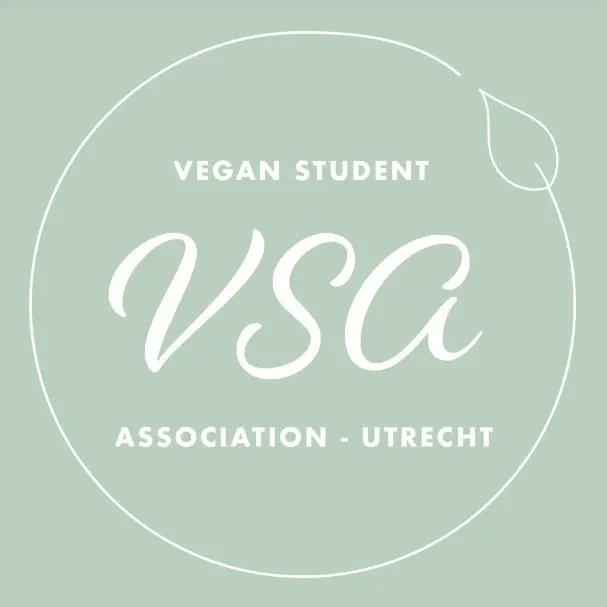

Build a career that helps animals
Careers for Animals is an event for students, young professionals, and career changers who want to increase their impact for animals, the protein transition, and the wider food transition. Through keynote talks, short speaker sessions, workshops, office hours, and networking, the event helps participants discover effective career paths, connect with professionals in the field, and identify concrete next steps. After a strong first edition in 2025, the 2026 event aims to reach 100–200 attendees and offer a more ambitious, high-quality programme in Utrecht. The goal is to show that the biggest difference for animals may come not only from what we eat, but from how we choose to spend our working lives.
Event overview
Most people’s involvement in the protein transition stops at what they put on their plate. Careers for Animals is about the bigger opportunity: using your working life to create meaningful change for animals and food systems.
Date
October 10th, 13:00 - 17:00
Location
De zalen van Zeven
Boothstraat 7, 3512 BT Utrecht
Format
In-person talks, workshop, office hours, and networking drinks
Audience
Students, recent graduates, early-career professionals, and career changers
Why attend
This event is designed to help ambitious people move from general concern for animals to concrete, high-impact action.
Explore real career paths
Learn how people contribute to animal welfare, the protein transition, and food system change through policy, research, communications, corporate engagement, volunteering, and entrepreneurship.
Meet people doing the work
Hear directly from professionals already working in the field and get practical insight into what roles exist, what skills matter, and where talent is most needed.
Leave with next steps
Translate your interests, background, and career stage into specific follow-up actions, whether that means applying for roles, volunteering, donating effectively, or starting your own project.
Speakers
The programme will combine a keynote on the landscape of animal welfare and the protein transition with around eight shorter talks from speakers across policy, research, communication, corporate engagement, volunteering, and entrepreneurship.
Keynote speaker
Planned keynote examples include internationally recognized voices in animal advocacy and protein transition.
Research & innovation
Speakers from areas such as alternative proteins, animal-free testing, and food system innovation.
Policy & systems change
Professionals working in government, public affairs, supermarkets, foodservice, and other sectors that can accelerate transition at scale.
More speakers will be announced soon.
About
Careers for Animals is designed to help people think seriously about how their working lives can contribute to meaningful progress for animals, the protein transition, and the wider food transition.
Why this event exists
People often think about helping animals through diet choices alone. But a career spans roughly 80,000 hours. Using those hours well can create far greater impact.
What participants gain
Clarity on effective career options, concrete next steps, and stronger connection to like-minded peers and professionals already active in the field.
Why now
After a strong first edition in 2025, the 2026 event aims to grow to 100–200 attendees and offer a more ambitious, high-quality programme in Utrecht.
Ready to join us?
If you want to build a career that creates meaningful impact for animals, this event is designed to help you find direction, community, and concrete next steps.
Register nowYou can replace this with your registration form or Eventbrite link later.
Contact
Questions, partnership inquiries, speaker suggestions, or accessibility requests? We’d love to hear from you.
You can also add your email address, Instagram, LinkedIn, or Eventbrite link here once available.
Organisation Team
The organizing team consists of seven enthusiastic animal advocates with extensive experience in event organization and a strong network in the animal welfare space. The organizers come from diverse backgrounds and bring different professional and community networks. This year, we are already collaborating with Effective Altruism Netherlands, the Vegan Student Association, and Studio Plantaardig.
Claudia Schenk
Event manager with a background in sustainable agriculture.
Jos Veenhoven
Graduate in climate physics; volunteer at Faunalytics, where he translates research into accessible writing for animal advocates.
Lotte de Lint
Fund manager for animal welfare and food transition at Doneer Effectief, and PhD researcher on plant-based eating behavior; previously founded the Effective Altruism student group in Maastricht.
Ruben van den Bulck
Founder of Effective Animal Advocacy Netherlands; organizes events, gives career advice, and speaks at events about effective advocacy for animal welfare.
Leon Borgdorf
PhD researcher on the ethical and societal aspects of genetic modification of farmed animals; together with the Vegan Student Association, he launched a successful petition for plant-based coffee machines at Utrecht University; co-host of the podcast Lettuce Talk.
Aiko Unterweger
PhD researcher on greenwashing and humane-washing; active in national animal activism.
Laura Bindschedler
Board member of the Vegan Student Association Utrecht; biofabrication student and Education Coordinator at Young Transition to Animal-Free Innovation.
Partners

FAQ
Who is this event for?
Careers for Animals is for students, recent graduates, early-career professionals, and career changers who want to help animals through their careers or serious volunteering.
Do I need prior experience in animal advocacy or the protein transition?
No. The event is designed both for people exploring this path for the first time and for those who already care deeply about these issues but want more clarity on how to act effectively.
What can I expect from the programme?
The programme is expected to include a keynote, around eight shorter talks, office hours with speakers, a workshop to turn ideas into concrete next steps, and a closing networking drink.
Where will the event take place?
The event will take place at De zalen van Zeven, Boothstraat 7, 3512 BT Utrecht, the Netherlands, and will be held in person.
What language will the event be in?
English. This makes the event accessible to international students, professionals, and speakers.
How much do tickets cost?
Tickets are planned to remain accessible: €10 for students and €20 for professionals.
Will there be networking?
Yes. Connecting attendees with like-minded peers and professionals in the field is a central part of the event, including through office hours and the closing networking drink.
How do I register?
Use the Register now button to access the registration form or Eventbrite page once ticketing is live.